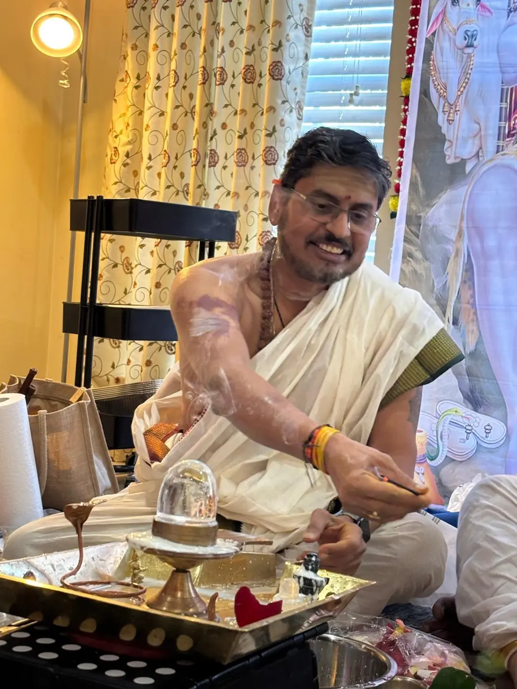

Traditional Hindu ceremonies · Pennsylvania
ॐ Shri Gurubhyo Namah
HariH ॐ
Puja services for families across Greater Philadelphia, Downingtown, Chester Springs, Exton, Malvern and nearby areas—in Telugu, Hindi and English.

Services
Pujas for life’s meaningful moments
Open any service to view its preparation checklist and required items.
Your priest
Santosh Srirangam
Offering traditional Hindu puja services for families throughout the Greater Philadelphia area. A personal introduction will be added soon.
TeluguHindiEnglish
Plan your ceremony
Let’s discuss your Puja
Call to ask about availability, ceremony details, location and preparations.
(404) 936-4387Serving Greater Philadelphia and nearby communities in Pennsylvania.